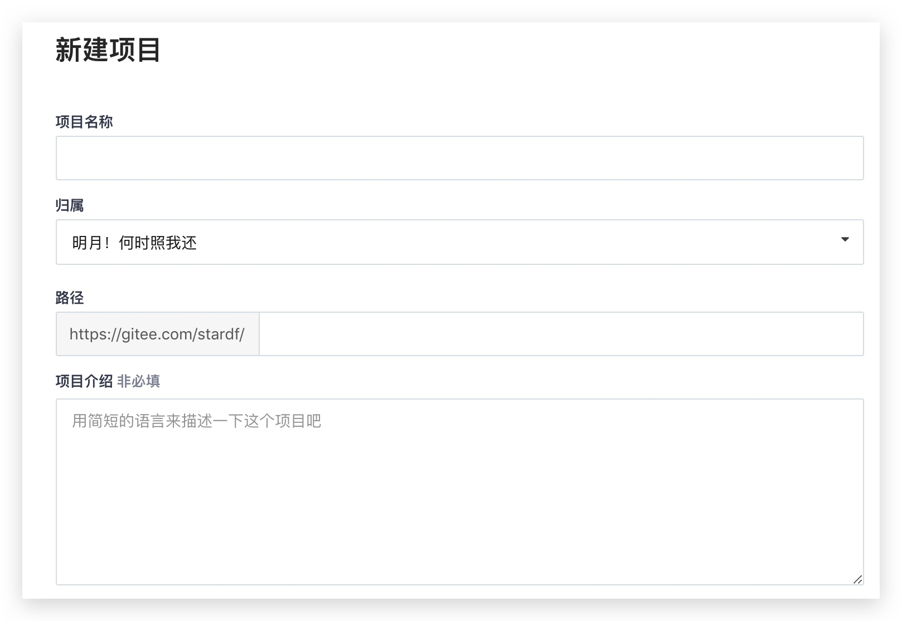
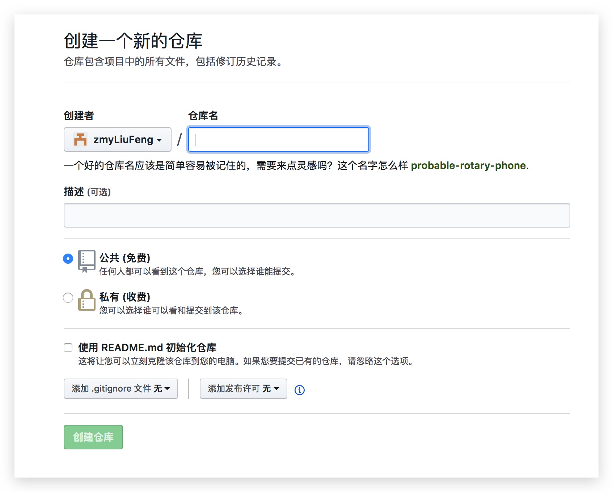
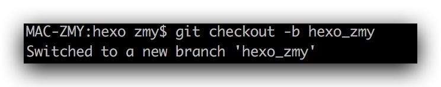
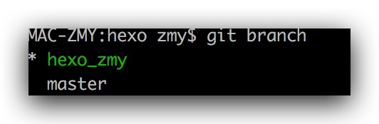
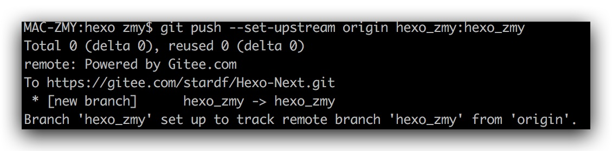
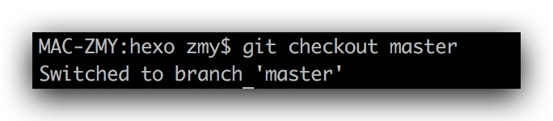
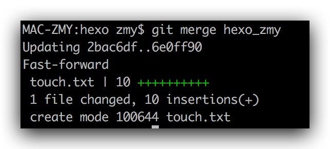
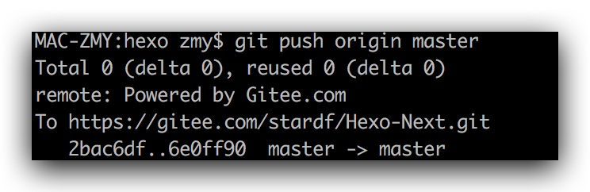
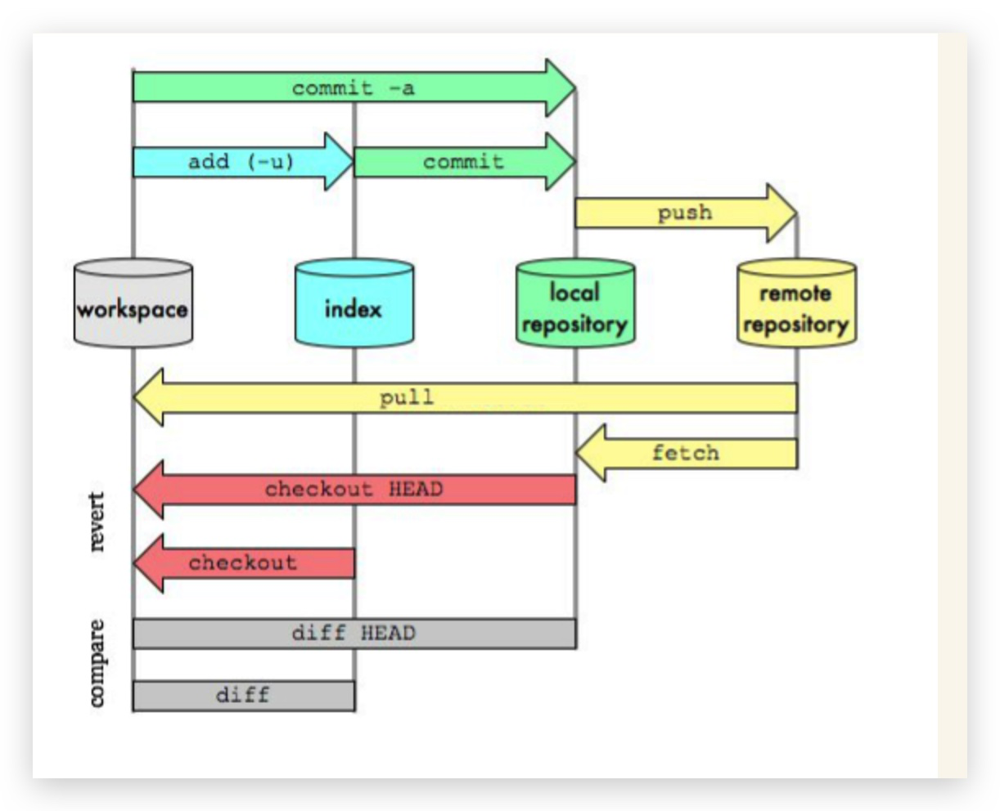

第一步 先初始化 git 仓库
到需要cd到 git 管理的文件下
cd ***使用 git init 初始化 git 仓库
git init
第二步 在 gitee 或者 github 上建立远程仓库
Gitee
GitHub
第三步 建立本地和远程的连接
git pull origin master --allow-unrelated-histories
第四步 把要提交的东西天剑到暂存区
- 首先使用
git status查看暂存区是否有要提交的文件 - 假设没有文件 则使用
git dd <这个文件的相对路径>如果要添加全部 则使用git add .
第五步 提交暂存区的文件到本地 Git
git commit -m "注释"
第六步 把本地仓库 push 到远程仓库
git push -u origin master
这个时候大家会发现它报错了 惊喜吧 别着急 咱们马上说解决方法
错误如下
1 | error: failed to push some refs to 'https://gitee.com/stardf/Hexo-Next.git' |
`
解决方法:
先拉去一下远程仓库
git pull origin master --allow-unrelated-histories
然后再推送到远程仓库
git push origin master
第七步 建立自己的分支
为什么要建立自己的分支呢，因为实际操作都不允许直接在 master 主分支上进行提交 只有先到自己的分支 然后合并到主分支才可以
建立自己的本地分支
git checkouut -b <要创建的分支名>如
git checkout -b dev_test
hexo_zmy
这行命令的意思是创建并且切换到这个分支
使用
git branch查看当前的分支
带 * 就代表目前是那个分支
修改文件提交到自己现在使用的本地分支
git commit -m ""本地分支推送到远程分支
若是不推送的话 这个分支只会存在你本地 远程仓库也不会出现这个分支的远程分支
git push --set-upstream origin 本地分支名:远程分支名这行命令执行后 就会先在远程仓库建立一个远程分支 名字就是你的远程分支名 然后把现在使用的本地分支推送到这个远程分支

第八步 把自己的分支合并到主分支 Master
首先切换到 本地Master主分支、
git checkout master
合并别的分支
git merge <被合并的分支名>
这个时候你的本地 master 分支已经成功合并了 hexo_zmy 的分支但是远程分支上还没有所以好 合并后的本地分支需要推送到远程分支
git push origin master
这个时候远程仓库也会出现合并的内容了
第九步 一些技巧和常用的命令
一定要注意 一定要注意 一定要注意
在每次提交前先拉取，有冲突解决冲突再提交
再说一些常用的命令
git常用命令：
- git init //初始化本地git环境
- git clone XXX//克隆一份代码到本地仓库
- git pull //把远程库的代码更新到工作台
- git pull –rebase origin master //强制把远程库的代码跟新到当前分支上面
- git fetch //把远程库的代码更新到本地库
- git add . //把本地的修改加到stage中
- git commit -m ‘comments here’ //把stage中的修改提交到本地库
- git push //把本地库的修改提交到远程库中
- git branch -r/-a //查看远程分支/全部分支
- git checkout master/branch //切换到某个分支
- git checkout -b test //新建test分支
- git checkout -d test //删除test分支
- git merge master //假设当前在test分支上面，把master分支上的修改同步到test分支上
- git merge tool //调用merge工具
- git stash //把未完成的修改缓存到栈容器中
- git stash list //查看所有的缓存
- git stash pop //恢复本地分支到缓存状态
- git blame someFile //查看某个文件的每一行的修改记录（）谁在什么时候修改的）
- git status //查看当前分支有哪些修改
- git log //查看当前分支上面的日志信息
- git diff //查看当前没有add的内容
- git diff –cache //查看已经add但是没有commit的内容
- git diff HEAD //上面两个内容的合并
- git reset –hard HEAD //撤销本地修改
- echo $HOME //查看git config的HOME路径
- export $HOME=/c/gitconfig //配置git config的HOME路径
团队协作git操作流程：
- 克隆一个全新的项目，完成新功能并且提交：
- git clone XXX //克隆代码库
- git checkout -b test //新建分支
- modify some files //完成修改
- git add . //把修改加入stage中
- git commit -m ‘’ //提交修改到test分支
- review代码
- git checkout master //切换到master分支
- git pull //更新代码
- git checkout test //切换到test分支
- git meger master //把master分支的代码merge到test分支
- git push origin 分支名//把test分支的代码push到远程库
- 目前正在test分支上面开发某个功能，但是没有完成。突然一个紧急的bug需要处理
- git add .
- git stash
- git checkout bugFixBranch
- git pull –rebase origin master
- fix the bug
- git add .
- git commit -m ‘’
- git push
- git checkout test
- git stash pop
- continue new feature’s development
- git工作流
